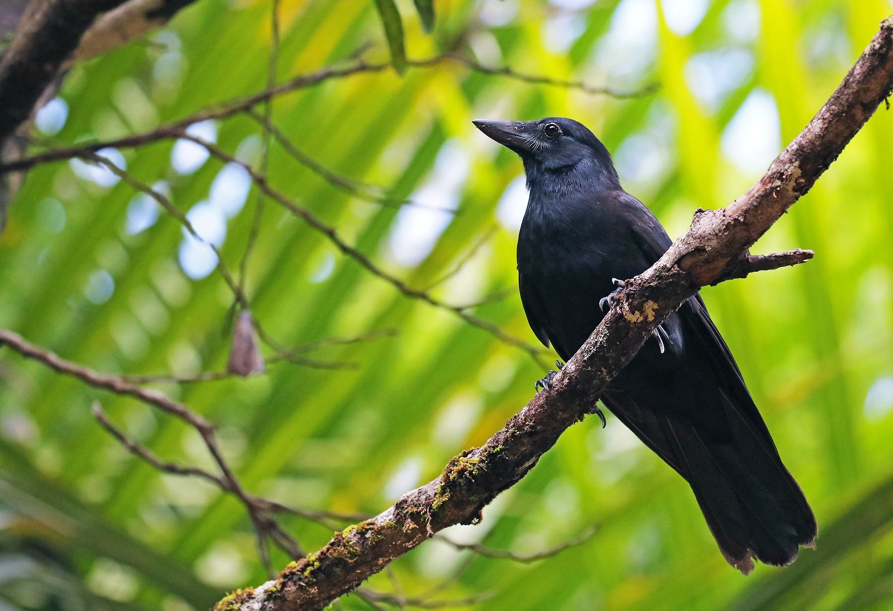

Corvus moneduloides
New Caledonian Crows are often seen in their range and are have an average population. They have glossy black plumage with black legs and feet. They are omnivorous and mainly feed on nuts, insects, eggs snails, lizards and more.